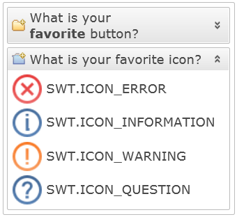
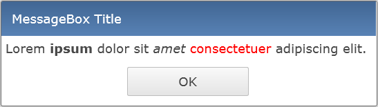

The support for simple HTML markup has been extended to the ExpandBar widget. It
can be activated in the same way like in Table and Label, using the
constant RWT.MARKUP_ENABLED. It affects the text in the ExpandItem
header.

We also added markup support to MessageBox message. Use the new public method
setMarkupEnabled to enable it.

This is one of the most requested features, which is finally implemented. Most recent browser
versions supported by RAP (except IE9) can filter the files shown in the browse dialog by their
extensions. To set them, use setFilterExtensions( String[] ) on
FileUpload/FileDialog.
It's now possible to specify the RichTextEditor language using the new generic
RichTextEditorConfiguration class.
Big thanks to Wojtek Polcwiartek for its contribution.